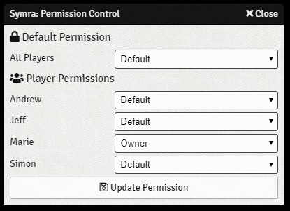
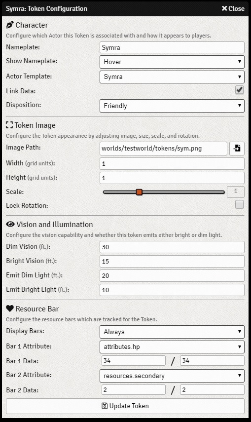

The Actor Entity¶
One of the most fundamental entities within Foundry Virtual Tabletop is the Actor. Actors are the protagonists, allies, monsters, antagonists, and persons within the World that you create. The game System being used has control to define the exact types of actors which are relevant for it’s gameplay, but for most tabletop roleplaying systems these actors will represent the characters which the player Users impersonate and the foes they encounter.
Working with Actors
Actor Creation and Configuration¶
To create a new Actor, visit the Actors Directory in the sidebar by clicking on the icon that looks like a group of people. At the bottom of this directory tab you can create a new Actor, or first create a Folder that you can use to organize many actors.
Actor configuration is handled through the Actor Sheet which is opened by left clicking on an Actor entry in the sidebar directory or by double-clicking on a token within a Scene. The Actor Sheet itself is usually a system-specific implementation, so the details of what can be configured at an Actor level will vary by game system.

The Actor Sheet which is specific to the basic D&D5e game system implementation
Actor Permissions¶
Each Actor can have permissions configured at an individual User level. Actor permissions control which User or Users may see or edit that Actor, or impersonate it’s Token. To modify the permissions configured for an Actor, right-click on the Actor entry in the sidebar and select the Permissions option.
A single permission level may be assigned to all users at once, or individually user-by-user. A permission given to a specific User will override the level of permission given to all Users.
- None
- The User is not able to see the Actor in the sidebar, open its’ sheet, or control its’ Token. This is the default permission level.
- Limited
- The User is able to see the Actor entry in the sidebar, and observe limited (but not full) details regarding that Actor. Users with limited permission cannot control the Actor’s token.
- Observer
- The User is able to see the Actor’s entry in the sidebar directory and open it’s character sheet. The User is also able to see through the Token’s perspective on the active Scene, but not control that Token.
- Owner
- The User has full control over the actor and can open and edit their Actor sheet as well as control and see from the perspective of their Token.
Default Actor Token¶
The Token Configuration sheet controls and customizes how an Actor is represented within a Scene. Each Actor has a default token configuration which defines a template for that token when it is placed. Once a token is actually placed, it is an independent copy which can be configured differently from the Actor’s prototype.
To modify the default token configuration for an Actor, you may either:
- Click the Configure Token button in the header of an Actor sheet.
- Edit the configuration for an existing Token and, while having that configured token selected, click Assign Token in the header of the Actor sheet.
To modify a Token which has already been placed within the Scene, double right-click the token to access the Token Configuration menu.
Token Configuration Options¶
The Token Configuration sheet features the following options which are shown in the above image and explained in the table below.
- Nameplate
- Configure the name which is shown for the token, this can potentially be different from the name of the actual Actor.
- Show Nameplate
Configure the level of visibility for the token’s nameplate. The following options are supported:
- None - The nameplate will not be shown
- Control - Displayed when the Token is currently controlled
- Owner Hover - Displayed when the token is hovered over by a User who owns the token’s Actor
- Hover - Displayed when the token is hovered over by any User
- Owner - Always displayed to any User who owns the token’s Actor
- Always - Always displayed to every User
- Actor Template
- Specify which Actor that is present within the World defines the Actor data which describes the Token.
- Link Data
- When enabled, changes to the resource pools either on the base Actor or on the Token itself will reflect in the other location. As a general rule of thumb, Tokens should be linked if their Actor is a unique character, such that there would only be one instance of that Actor within any particular Scene. Alternatively, Tokens should not be linked when the Actor entry represents a generic creature or type of character. When data is not linked, each Token will have independent resources pools and turn order tracking.
- Disposition
- For non-player characters, setting a Token disposition allows for the colored border shown around a Token to be drawn in a different color which can differentiate enemies from allies during combat encounters.
- Image Path
- The file path to the artwork that is used for the Token. This file must either be served locally from within
the
publicdirectory or from some publicly accessible web location. - Width
- The number of grid units in the horizontal dimension that this token occupies. A token which uses a single grid square would have a width of 1.
- Height
- The number of grid units in the vertical dimension that this token occupies. A token which uses a single grid square would have a height of 1.
- Scale
- A scaling ratio for the size of the Token’s artwork. The token base is unaffected by this value, but the visual size of the artwork will change with scale. Numbers greater than 1 result in larger token artwork while numbers less than 1 result in smaller token artwork.
- Lock Rotation
- If this setting is enabled the token cannot be rotated. This setting is typically ideal for portrait style tokens where the artwork orientation is more ideally fixed.
- Dim Vision
- For scenes which require Token Vision, this setting specifies the visible radius with which the Token can see as if in dim light conditions.
- Bright Vision
- For scenes which require Token Vision, this setting specifies the visible radius with which the Token can see as if in bright light conditions. Please note that both this setting and the Dim Vision setting are radii with respect to the token location as the origin, so typically the Bright Vision radius is a smaller number than the Dim Vision setting.
- Emit Dim Light
- For scenes which require Token Vision, this setting specifies a distance of dim light emitted by this token that is visible by all other tokens.
- Emit Bright Light
- For scenes which require Token Vision, this setting specifies a distance of bright light emitted by this token that is visible by all other tokens. As with the above settings, these distances are radii with respect to the token center, so typically Emit Bright Light is a smaller number than the Emit Dim Light setting.
- Display Bars
Configure the level of visibility for the token’s resource bars. The following options are supported:
- None - Resource bars will not be shown
- Control - Displayed when the Token is currently controlled
- Owner Hover - Displayed when the token is hovered over by a User who owns the token’s Actor
- Hover - Displayed when the token is hovered over by any User
- Owner - Always displayed to any User who owns the token’s Actor
- Always - Always displayed to every User
- Bar 1 Attribute
- Select the attribute from the Actor’s available data fields which should be displayed using the Token’s primary resource bar.
- Bar 1 Data (Current / Max)
- Set the values of the primary resource bar that apply to this particular token. If the Token’s data is linked to it’s parent Actor, that Actor’s values will also be changed.
- Bar 2 Attribute
- Select the attribute from the Actor’s available data fields which should be displayed using the Token’s secondary resource bar.
- Bar 2 Data (Current / Max)
- Set the values of the secondary resource bar that apply to this particular token. If the Token’s data is linked to it’s parent Actor, that Actor’s values will also be changed.
The Actor Entity API¶
For module developers interested in working with Scenes, API documentation for scenes and associated classes is available in the The Actor Entity page.